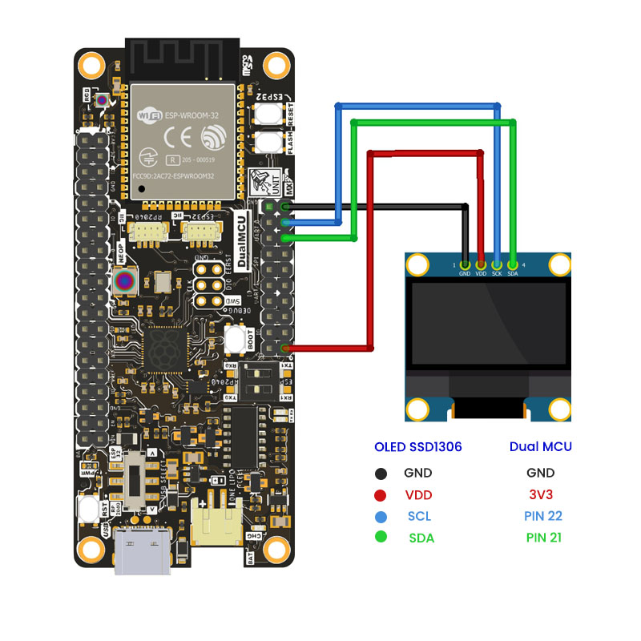
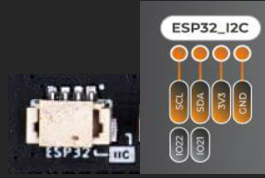
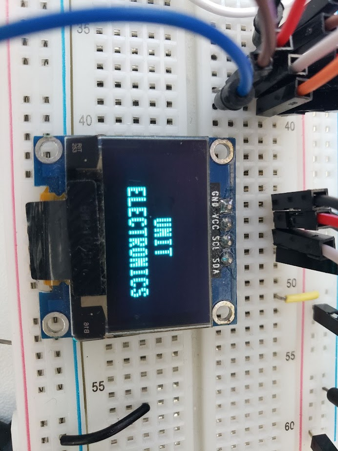

Control de pantalla OLED (I2C)#
Objetivo#
El objetivo de este proyecto es usar el microcontrolador DualMCU para mostrar información en una pantalla OLED.
Nota
En esta práctica, se utilizará el ESP32.
Descripción#
Visualizamos datos relevantes en un formato fácilmente comprensible y personalizable mediante una pantalla OLED en 3 diferentes fases:
Carga de la librería para el uso de la pantalla OLED SSD1306.
Mostrar información tipo texto en la pantalla.
Crear un contador regresivo con la capacidad de configurar el tiempo deseado y visualizar datos en tiempo real de sensores ambientales; puedes utilizar los sensores de las prácticas anteriores o uno nuevo.
Cabe mencionar que se usará comunicación I2C como protocolo entre la pantalla OLED y la DualMCU. La propuesta es que puedas utilizar cualquier sensor para mostrar los datos en la misma pantalla.
Requisitos#
1x Placa UNIT DualMCU Placa UNIT DualMCU
1x Pantalla OLED Pantalla OLED
1x Protoboard Protoboard
1x Cables para protoboard Cables para protoboard
1x Cables Dupont: Hembra - Macho Cables Dupont
Diagrama de conexión#
Nota
Recuerda que al trabajar con la DualMCU puedes intercambiar entre microcontroladores mediante el interruptor de cambios. Para esta práctica utilizaremos el microcontrolador ESP32; por lo tanto, debes cambiar el interruptor a la posición “B”.

El siguiente diagrama muestra la comunicación entre ambos módulos para mostrar un texto predeterminado:
Otra opción de conexión es a través de los pines de comunicación I2C QWIIC para ESP32:
{kind=link}
Código#
A continuación se muestra el código para visualizar la leyenda “UNIT ELECTRONICS”.
1'''
2Unit Electronics 2023
3 (o_
4 (o_ //\\
5 (/)_ V_/_
6tested code mark
7version: 0.0.2
8revision: 0.0.2 (2024)
9'''
10
11import machine
12from ssd1306 import SSD1306_I2C
13
14i2c = machine.SoftI2C(sda=machine.Pin(21), scl=machine.Pin(22))
15
16oled = SSD1306_I2C(128, 32, i2c)
17
18oled.fill(1)
19oled.show()
20
21oled.fill(0)
22oled.show()
23oled.text('UNIT', 50, 10)
24oled.text('ELECTRONICS', 25, 20)
25
26oled.show()
En la siguiente imagen se observa el test funcionando:
{kind=link}
A continuación se presenta otro código base que incluye:
Despliegue de la hora actual en formato digital.
Función para un contador regresivo con tiempo de entrada.
Ejemplo de inicialización y lectura de sensores ambientales (debes implementar la función
read_sensor_data).
1from machine import Pin, I2C
2import ssd1306
3import time
4
5# Inicializar I2C
6i2c = machine.I2C(0, scl=machine.Pin(21), sda=machine.Pin(22))
7count = 100
8segundos = 0
9minutos = 15
10horas = 10
11
12# Inicializar la pantalla OLED
13display = ssd1306.SSD1306_I2C(128, 64, i2c)
14
15def get_current_time():
16 global segundos, minutos, horas
17 # Incrementar el contador de segundos
18 segundos += 1
19
20 # Verificar si ha pasado un minuto (60 segundos)
21 if segundos == 60:
22 segundos = 0
23 minutos += 1
24
25 # Verificar si ha pasado una hora (60 minutos)
26 if minutos == 60:
27 minutos = 0
28 horas += 1
29
30 # Verificar si ha pasado un día (24 horas)
31 if horas == 24:
32 horas = 0
33
34 return segundos, minutos, horas
35
36def create_countdown():
37 global count
38 if count <= 0:
39 count = 100
40 raise ValueError("El tiempo del contador debe ser mayor que cero")
41 count -= 1
42 return count
43
44def read_sensor_data():
45 # Implementar la función para leer los datos de los sensores ambientales
46 pass
47
48while True:
49 sec, minu, hour = get_current_time()
50
51 # Crear un contador regresivo
52 countdown = create_countdown()
53
54 # Leer los datos de los sensores ambientales
55 sensor_data = read_sensor_data()
56
57 # Mostrar los datos en la pantalla OLED
58 display.fill(0)
59 display.text('Hora: ' + str(hour) + ":" + str(minu) + ":" + str(sec), 0, 0)
60 display.text('Contador: ' + str(countdown), 0, 10)
61 display.text('Datos del sensor: ' + str(sensor_data), 0, 20)
62 display.show()
63
64 time.sleep(1)

Conclusiones#
Durante el desarrollo de la práctica se evidenció el correcto establecimiento de la comunicación I2C con la pantalla OLED, subrayando la importancia de utilizar una librería compatible con el dispositivo. Se recomienda ajustar la práctica para adaptarla a sensores analógicos y digitales según tus necesidades.
Se invita a replicar la misma práctica utilizando el microcontrolador RP2040, aprovechando el conector QWIIC para facilitar la conexión. Recuerda ajustar la configuración del puerto I2C acorde a los pines del RP2040.
Biblioteca SSD1306#
Para facilitar la programación con la pantalla OLED, hemos identificado una librería específica para OLED. Se recomienda copiar el siguiente código y guardarlo como ssd1306.py en la DualMCU.
1 # MicroPython SSD1306 OLED driver, I2C and SPI interfaces
2 # MicroPython SSD1306 OLED driver, I2C and SPI interfaces
3
4 from micropython import const
5 import framebuf
6
7
8 # register definitions
9 SET_CONTRAST = const(0x81)
10 SET_ENTIRE_ON = const(0xA4)
11 SET_NORM_INV = const(0xA6)
12 SET_DISP = const(0xAE)
13 SET_MEM_ADDR = const(0x20)
14 SET_COL_ADDR = const(0x21)
15 SET_PAGE_ADDR = const(0x22)
16 SET_DISP_START_LINE = const(0x40)
17 SET_SEG_REMAP = const(0xA0)
18 SET_MUX_RATIO = const(0xA8)
19 SET_COM_OUT_DIR = const(0xC0)
20 SET_DISP_OFFSET = const(0xD3)
21 SET_COM_PIN_CFG = const(0xDA)
22 SET_DISP_CLK_DIV = const(0xD5)
23 SET_PRECHARGE = const(0xD9)
24 SET_VCOM_DESEL = const(0xDB)
25 SET_CHARGE_PUMP = const(0x8D)
26
27 # Subclassing FrameBuffer provides support for graphics primitives
28 # http://docs.micropython.org/en/latest/pyboard/library/framebuf.html
29 class SSD1306(framebuf.FrameBuffer):
30 def __init__(self, width, height, external_vcc):
31 self.width = width
32 self.height = height
33 self.external_vcc = external_vcc
34 self.pages = self.height // 8
35 self.buffer = bytearray(self.pages * self.width)
36 super().__init__(self.buffer, self.width, self.height, framebuf.MONO_VLSB)
37 self.init_display()
38
39 def init_display(self):
40 for cmd in (
41 SET_DISP | 0x00, # off
42 # address setting
43 SET_MEM_ADDR,
44 0x00, # horizontal
45 # resolution and layout
46 SET_DISP_START_LINE | 0x00,
47 SET_SEG_REMAP | 0x01, # column addr 127 mapped to SEG0
48 SET_MUX_RATIO,
49 self.height - 1,
50 SET_COM_OUT_DIR | 0x08, # scan from COM[N] to COM0
51 SET_DISP_OFFSET,
52 0x00,
53 SET_COM_PIN_CFG,
54 0x02 if self.width > 2 * self.height else 0x12,
55 # timing and driving scheme
56 SET_DISP_CLK_DIV,
57 0x80,
58 SET_PRECHARGE,
59 0x22 if self.external_vcc else 0xF1,
60 SET_VCOM_DESEL,
61 0x30, # 0.83*Vcc
62 # display
63 SET_CONTRAST,
64 0xFF, # maximum
65 SET_ENTIRE_ON, # output follows RAM contents
66 SET_NORM_INV, # not inverted
67 # charge pump
68 SET_CHARGE_PUMP,
69 0x10 if self.external_vcc else 0x14,
70 SET_DISP | 0x01,
71 ): # on
72 self.write_cmd(cmd)
73 self.fill(0)
74 self.show()
75
76 def poweroff(self):
77 self.write_cmd(SET_DISP | 0x00)
78
79 def poweron(self):
80 self.write_cmd(SET_DISP | 0x01)
81
82 def contrast(self, contrast):
83 self.write_cmd(SET_CONTRAST)
84 self.write_cmd(contrast)
85
86 def invert(self, invert):
87 self.write_cmd(SET_NORM_INV | (invert & 1))
88
89 def show(self):
90 x0 = 0
91 x1 = self.width - 1
92 if self.width == 64:
93 # displays with width of 64 pixels are shifted by 32
94 x0 += 32
95 x1 += 32
96 self.write_cmd(SET_COL_ADDR)
97 self.write_cmd(x0)
98 self.write_cmd(x1)
99 self.write_cmd(SET_PAGE_ADDR)
100 self.write_cmd(0)
101 self.write_cmd(self.pages - 1)
102 self.write_data(self.buffer)
103
104
105 class SSD1306_I2C(SSD1306):
106 def __init__(self, width, height, i2c, addr=0x3C, external_vcc=False):
107 self.i2c = i2c
108 self.addr = addr
109 self.temp = bytearray(2)
110 self.write_list = [b"\x40", None] # Co=0, D/C#=1
111 super().__init__(width, height, external_vcc)
112
113 def write_cmd(self, cmd):
114 self.temp[0] = 0x80 # Co=1, D/C#=0
115 self.temp[1] = cmd
116 self.i2c.writeto(self.addr, self.temp)
117
118 def write_data(self, buf):
119 self.write_list[1] = buf
120 self.i2c.writevto(self.addr, self.write_list)
121
122
123 class SSD1306_SPI(SSD1306):
124 def __init__(self, width, height, spi, dc, res, cs, external_vcc=False):
125 self.rate = 10 * 1024 * 1024
126 dc.init(dc.OUT, value=0)
127 res.init(res.OUT, value=0)
128 cs.init(cs.OUT, value=1)
129 self.spi = spi
130 self.dc = dc
131 self.res = res
132 self.cs = cs
133 import time
134
135 self.res(1)
136 time.sleep_ms(1)
137 self.res(0)
138 time.sleep_ms(10)
139 self.res(1)
140 super().__init__(width, height, external_vcc)
141
142 def write_cmd(self, cmd):
143 self.spi.init(baudrate=self.rate, polarity=0, phase=0)
144 self.cs(1)
145 self.dc(0)
146 self.cs(0)
147 self.spi.write(bytearray([cmd]))
148 self.cs(1)
149
150 def write_data(self, buf):
151 self.spi.init(baudrate=self.rate, polarity=0, phase=0)
152 self.cs(1)
153 self.dc(1)
154 self.cs(0)
155 self.spi.write(buf)
156 self.cs(1)
Nota
Archivo fuente original extraído del repositorio micropython-ssd1306 de Stefan Lehmann.
Posteriormente, guarda este código en la DualMCU con el nombre de ssd1306.py.